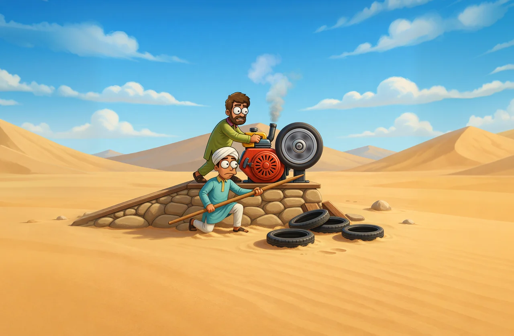
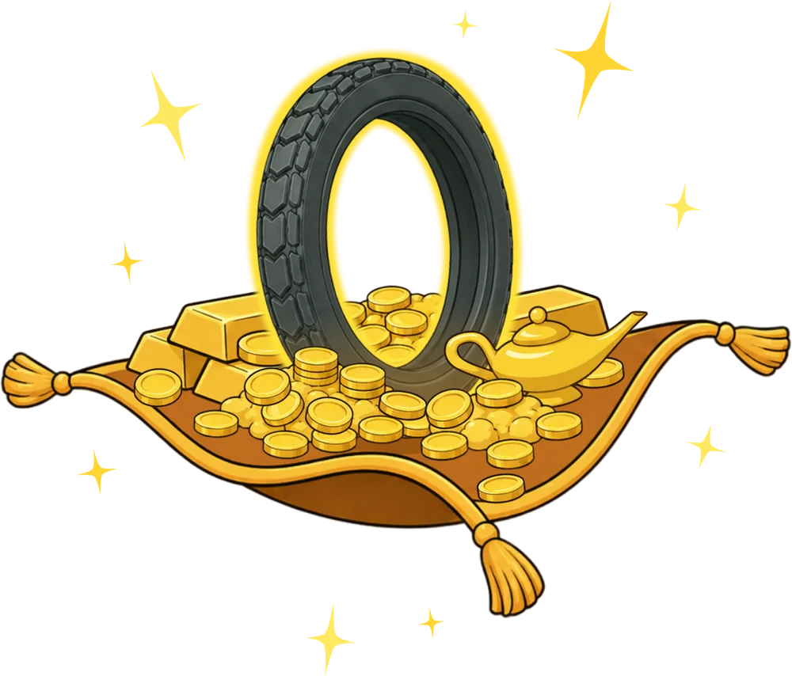
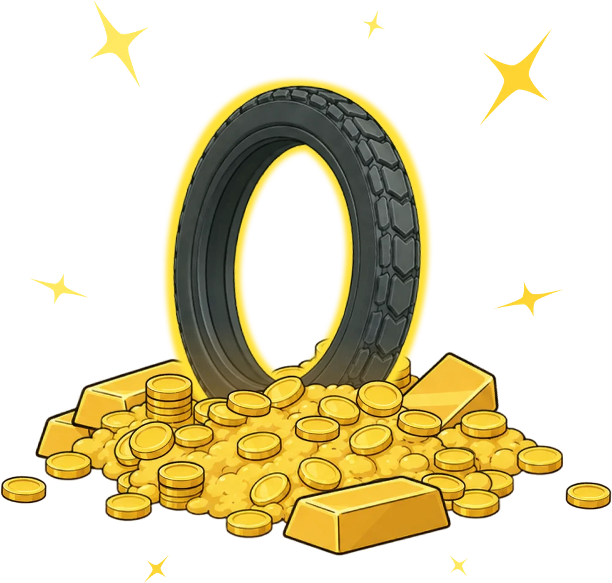

Wheel Out Review: RTP, Volatility, Max Win & Verdict
This Wheel Out review breaks down the InOut Games crash game in detail: its 97% RTP, high volatility, up to 10,000x maximum win, how it plays, and whether it is worth your time.
🔞 18+ only · Real-money gambling
This Wheel Out review breaks down the InOut Games crash game in detail: its 97% RTP, high volatility, up to 10,000x maximum win, how it plays, and whether it is worth your time. Wheel Out is a real-money game, so this review also covers fairness and safety.
About this review
By Ryan Murton, Growth & Product, 7 years covering online casino games and crash titles. Reviewed for accuracy on . See our About page and Editorial policy for how we test games and disclose commercial links.
Wheel Out review: quick verdict
Wheel Out is a straightforward, well-themed crash game: launch a tire across a desert, watch the multiplier climb, cash out before it crashes. The 97% RTP is competitive for the genre and the up-to-10,000x ceiling gives it upside, but high volatility makes it swingy, better suited to players comfortable with variance.
[CONFIRM] reviewer hands-on notes and final score methodology. No star rating is published without a disclosed review methodology.

Wheel Out under review
How Wheel Out works
Wheel Out is an instant-win crash game by InOut Games. A tire launches and rolls across a desert while a multiplier climbs the longer it keeps going. You place a bet before the round, then cash out at any point to lock in your stake multiplied by the current value. If the tire crashes before you cash out, the bet is lost. The tension is entirely in the timing of the cash-out. There is no way to influence the crash point; the only decision that matters is when you press cash out.
Wheel Out RTP, volatility and max win
Wheel Out is published with a 97% RTP, high volatility, and a maximum win of up to 10,000x (up to $20,000 at the stated stakes). RTP (return to player) is a long-run statistical average measured over millions of rounds, it is not a promise about any single session. A 97% RTP does not mean you get 97% of every stake back; short sessions can swing far above or below it, and high volatility widens that swing. No result is ever guaranteed. In practice, high volatility means longer gaps between wins and a wider range of outcomes, so a session bankroll and a cash-out plan matter more than in a low-volatility game.

Key numbers at a glance
Multipliers and pace of play
The multiplier rises continuously from the start of each round until the tire crashes, and you can cash out at any point. Rounds are short, which makes the game fast-paced, easy to play many rounds quickly, so set limits before you start.
[CONFIRM] exact round timing, min/max multiplier behaviour with operator.

The multiplier rising mid-round
Wheel Out strategy and tips
There is no strategy that changes the odds of Wheel Out, the RNG is fixed and certified. What you can control is discipline: decide a target cash-out multiplier before each round, avoid chasing losses, and treat a rare big multiplier as luck, not a plan. Lower, more frequent cash-outs reduce variance; holding for large multipliers increases it.
Is Wheel Out fair?
Crash games like Wheel Out use a certified random number generator (RNG) to decide when each round crashes. A certified RNG means an independent testing lab has verified the outcomes are random and cannot be predicted or influenced by the player, the operator, or any third-party tool.
[CONFIRM] RNG certification lab and licence details with InOut Games / operator.
Wheel Out predictors, signals and hacks, the truth
Searches for a 'Wheel Out predictor', 'signals' or 'hack' point to tools that claim to forecast the crash point. They cannot work: outcomes come from a certified RNG that is independent of past rounds and cannot be read in advance. These tools are at best useless and at worst scams designed to take your money or credentials. There is no legitimate way to predict Wheel Out, and this site does not endorse any such tool.
Where to play Wheel Out for real money
Wheel Out is available at licensed operators that carry InOut Games titles. Play only at a casino licensed in your jurisdiction, and check local rules first, real-money play is not legal everywhere.
We may earn a commission if you sign up through links on this page, at no extra cost to you. It never affects our rankings or verdicts.
[INSERT] operator comparison table · [CONFIRM] licensed operators and eligible jurisdictions. See the where to play section on the hub for the current placeholder table.
Wheel Out pros and cons
✓Pros
competitive 97% RTP
high 10,000x ceiling
simple, fast, instant-play in browser
certified RNG
✗Cons
high volatility means frequent dry spells
no skill element to the outcome
real-money availability depends on jurisdiction
[CONFIRM] any additional hands-on pros/cons.
Wheel Out review FAQ
Is Wheel Out worth playing?
Wheel Out is worth a look if you enjoy fast crash games and are comfortable with high volatility. The 97% RTP is solid for the genre and the up-to-10,000x ceiling adds upside, but the swingy nature means it suits variance-tolerant players more than cautious ones.
What is the Wheel Out RTP and is it good?
Wheel Out has a published 97% RTP, which is competitive for a crash game and slightly above many slots. Remember RTP is a long-run average, not a session guarantee, and high volatility widens the range of real outcomes.
How volatile is Wheel Out?
Wheel Out is a high-volatility game. That means bigger potential wins but longer stretches without them, so a clear bankroll limit and a planned cash-out target help manage the swings.
Does a Wheel Out predictor or hack work?
No. The crash point is decided by a certified random number generator that cannot be predicted or influenced. Any predictor, signal or hack tool claiming otherwise is misleading and should be avoided.
What is the biggest win possible on Wheel Out?
The published maximum is up to 10,000x your stake (up to $20,000 at the stated stakes). It is very rare because of the game's high volatility, so treat it as a ceiling rather than a realistic target.
Is Wheel Out safe to play?
Wheel Out itself uses a certified RNG and comes from an established studio, InOut Games. Safety mainly depends on playing at a properly licensed operator and avoiding any third-party 'predictor' or 'hack' tools.
18+ (21+ where required by law). Wheel Out is a real-money instant-win game and involves financial risk. Play only with money you can afford to lose, never chase losses, and treat any winnings as a bonus rather than income. If gambling stops being fun, support is available: GamCare (gamcare.org.uk), BeGambleAware (begambleaware.org), or the National Council on Problem Gambling (ncpgambling.org, 1-800-522-4700 in the US). Availability and legal age vary by jurisdiction, check your local rules before you play.
Affiliate disclosure: some links on this page are affiliate links. If you sign up or deposit through them we may earn a commission at no extra cost to you. This never affects our RTP figures, verdicts, or which operators we list, those are based on the game's published specifications and our own review criteria.
By Ryan Murton, Growth & Product covering crash and casino games for 7 years. Last updated: . See our editorial approach on the About page.